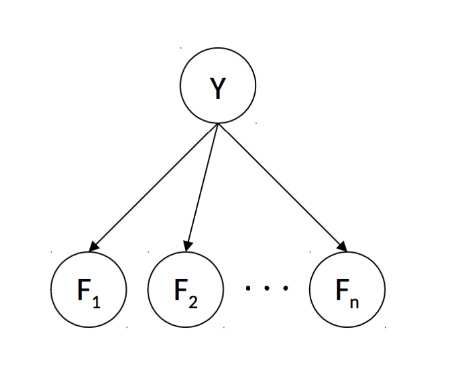

Machine Learning
-
Naive Bayes
-
Tell if an email is ham or spam
-
Compute both \( P\left(Y=\operatorname{spam} | F_{1}=f_{1}, \ldots, F_{n}=f_{n}\right) \)
and \(P\left(Y=\text{ham} | F_{1}=f_{1}, \ldots, F_{n}=f_{n}\right)\)
-
Model the probability relations with a Bayes' Net:

-
Assumes \(\forall i \neq j, F_i \perp\!\!\!\perp F_j \mid Y\)
-
So \(P(Y \mid F_0, F_1, \ldots, F_n) \propto P(Y, F_0, F_1, \ldots, F_n) = P(Y) \prod\limits_{i=0}^n
P(F_i \mid Y)\)
-
\(\begin{align*}
\text {prediction}\left(f_{1}, \cdots f_{n}\right)
&=\underset{y}{\operatorname{argmax}} P\left(Y=y | F_{1}=f_{1}, \ldots F_{N}=f_{n}\right) \\
&=\underset{y}{\operatorname{argmax}} P(Y=y) \prod_{i=1}^{n} P\left(F_{i}=f_{i} | Y=y\right)
\end{align*}\)
-
Generalizing to more classes:
\(P\left(Y, F_{1}=f_{1}, \ldots, F_{n}=f_{n}\right)=\left[ \begin{array}{c}{P\left(Y=y_{1},
F_{1}=f_{1}, \ldots, F_{n}=f_{n}\right)} \\ {P\left(Y=y_{2}, F_{1}=f_{1}, \ldots,
F_{n}=f_{n}\right)} \\ {\vdots} \\ {P\left(Y=y_{k}, F_{1}=f_{1}, \ldots,
F_{n}=f_{n}\right)}\end{array}\right]=\left[ \begin{array}{c}{P\left(Y=y_{1}\right) \Pi_{i}
P\left(F_{i}=f_{i} | Y=y_{1}\right)} \\ {P\left(Y=y_{2}\right) \Pi_{i} P\left(F_{i}=f_{i} |
Y=y_{2}\right)} \\ {\vdots} \\ {P\left(Y=y_{k}\right) \Pi_{i} P\left(F_{i}=f_{i} |
Y=y_{k}\right)}\end{array}\right]\)
-
Parameter Estimation
-
How to get CPT? Parameter estimation
-
Assuming we have \(n\) samples \(x_i\) drawn from a distribution parameterized by \(\theta\)
-
try to find most likely \(\theta\)
-
Maximum Likelihood Estimation: find \(\theta\) for which the seen distribution is most likely
-
Assumptions:
\(x_i\) are iid
All possible \(\theta\) are equally possible before any data is seen
-
Likelihood \(\mathscr{L}(\theta) = P_{\theta}\left(x_{1}, \ldots, x_{N}\right)\)
-
Since \(x_i\) is iid, \(P_{\theta}\left(x_{1}, \ldots, x_{N}\right) = \prod\limits_i
P_{\theta}(x_i)\)
-
Since at max value, the gradient is 0, the MLE for \(\theta\) is the \(\theta\) that satisfies
\(\frac{\partial}{\partial \theta} \mathscr{L}(\theta)=0\)
-
Maximum Likelihood for Naive Bayes
-
variables:
- \(n\) - number of words in our dictionary
- \(N\) - total number of samples, \(N_h\) number of ham samples, \(N_s\) number of spam
samples
- \(F_i\) - random variable which is 1 of word \(i\) is in the email
- \(Y\) - random variable that's either ham or spam
- \(f_i^{(j)}\) - value of \(F_i\) for the \(j\)th sample
-
Assuming that the appearance of each word depends on a Bernoulli distribution parameterized by
\(\theta_i\)
-
\(\theta_i=P\left(F_{i}=1 | Y=h a m\right)\)
-
\(\theta_i = \frac{1}{N_h} \sum\limits_{j=0}^{N_h}f_i^{(j)}\)
i.e. the fraction of ham emails that contain word \(i\)
-
Laplace smoothing: at strength \(k\), assumes having seen \(k\) additional samples of each outcome
-
\(P_{L A P, k}(x | y)=\frac{\operatorname{count}(x, y)+k}{\operatorname{count}(y)+k|X|}\)
-
Perceptrons
-
Single class: weight vector \(w\)
\(y = \begin{cases}1 & w^Tf(x) > 0 \\ -1 & w^Tf(x)<0\end{cases}\)
-
Weight update for single class: \(w \leftarrow y^*f(x)\) if \(y \neq y^*\)
-
Multiclass: weight matrix \(W\)
\(y = \arg \max (W x)\)
-
Weight update for multiclass: subtract feature vector from predicted class weights, add feature
vector to actual class weights
\(W \leftarrow W + d^Tf(x) \qquad \begin{cases} d_i = 1 & i=y^* \\ d_i = -1 & i=y \\ d_i = 0 & other
\end{cases}\)
-
Bias:
Append/prepend a constant 1 to the feature vector, and 1 row to the weight matrix
The additional row will be the weight for the bias